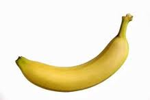

Banan
Fakta
Banan är ett bär och en ört tillhörande banansläktet i familjen bananväxter. Bananträder(busken) kan bli upp till tolv meter hög. Det finns cirka 300 sorter av bananer. Fruktköttet är i början fast och rikt på stärkelse, som sedan omvandlas till socker samtidigt som bananen mjuknar. Bananerna växer i tvåradiga klasar på en stock med ibland upp till 200 bananer och kan ha en sammanlagd vikt på upp till 50 kg. Bananerna skördas ofta när de är gröna och får eftermogna på destinationsorten. Bananen är en av de största örterna som finns.
Bild
